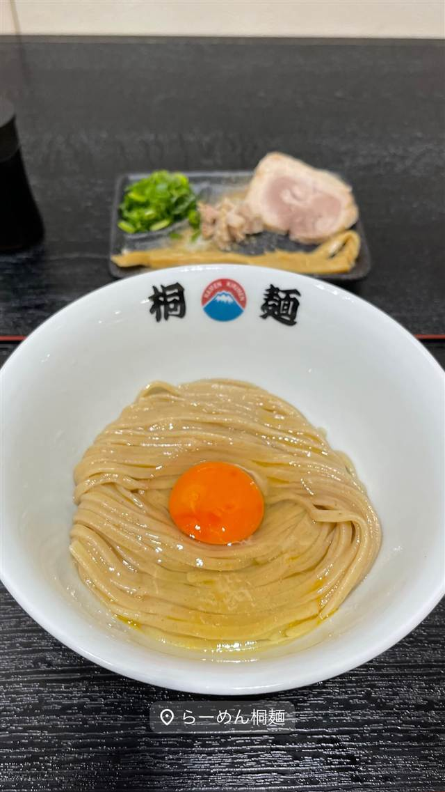

ラーメン · まぜそば・油そば · 十三
中華そば 桐麺 総本店
スープを使わず麺・塩ダレ・卵黄だけの「桐玉」百名店
らーめん桐麺
WHY GO
スープを使わず麺と塩ダレと卵黄だけで食べさせる全国的にも珍しいスタイルの店
「ラーメン人生JET」出身の桐谷尚幸氏が2014年に創業した、スープを使わない異色の中華そば店。自家製の平打ち麺に塩ダレと卵黄だけを絡めた看板の「桐玉」は、麺そのものの旨さを追求した引き算の一杯として食べログ百名店にも選ばれている。
TRIVIA
豆知識
- スープを使わず麺・塩ダレ・卵だけで食べさせる、全国的にも珍しいスタイル
- 2024年にフランチャイズ展開を開始し、門真に系列1号店が誕生した
REVIEWS
世間の評判
96.6ラーメンDB
看板メニュー桐玉の和風タレ
- 看板の桐玉は昆布出汁の効いた塩ダレがまろやかで好評という声が多い
- 甘めの出汁醤油で味変できるのが楽しいと評価されている
- 人気で30分前後並ぶこともあるという声もある
ラーメンデータベース 口コミ113件・総合158位・最新 2026-06
| 創業 | 2014年12月、神崎川駅前に1号店を創業。 |
|---|---|
| 系譜 | 創業者・桐谷尚幸氏は大阪の人気店「ラーメン人生JET」出身。2024年に桐谷氏が兵庫県へ転居したのに伴い、同じくJET出身の後輩・松井俊也氏が「桐麺JAPAN」を設立してブランドを継承し、桐谷氏は取締役最高顧問に。2024年11月には大阪・門真にフランチャイズ1号店もオープンした。 |
| 看板 | 「桐玉」（自家製麺に塩ダレと卵黄だけを合わせた玉子かけ麺） |
| こだわり | 国産小麦をブレンドした自家製麺はうどんのような強いコシと小麦の香りが特徴。スープを使わず、麺・塩ダレ・卵だけで完成させる「引き算」のスタイルを貫く。 |
| 掲載・評価 | 食べログ ラーメン百名店（大阪）に複数年選出されている。 |
| どこから | 遠方 |
| 行くなら | 行列 |
| 営業時間 | 月〜日 11:00-16:00、18:00-22:00 |
| 予算 | 昼 ¥1,000～¥1,999 夜 ¥1,000～¥1,999 |
| 場所 | 神崎川駅 大阪府大阪市淀川区十三本町2-1-6 |
食べたもの：油そば、卵黄
NEARBY
近い店・同じ系統の店
-
 ★
まぜそば・油そば 本郷三丁目
中華蕎麦にし乃
メニューは2種類のみ、生姜香る肉厚ワンタン入りの中華そば
昼 ¥1,000～¥1,999 夜 ¥1,000～¥1,999
★
まぜそば・油そば 本郷三丁目
中華蕎麦にし乃
メニューは2種類のみ、生姜香る肉厚ワンタン入りの中華そば
昼 ¥1,000～¥1,999 夜 ¥1,000～¥1,999
-
 ★
まぜそば・油そば 亀戸駅
しののめヌードル
淡海地鶏と干し椎茸出汁、手もみ自家製麺の油そば
昼 ¥1,000～¥1,999 夜 ¥1,000～¥1,999
★
まぜそば・油そば 亀戸駅
しののめヌードル
淡海地鶏と干し椎茸出汁、手もみ自家製麺の油そば
昼 ¥1,000～¥1,999 夜 ¥1,000～¥1,999
-
 ★
まぜそば・油そば 亀戸
DURAMENTEI（ドゥラメンテイ）
白醤油と黒醤油、選べる2種スープと自家製ワンタン
昼 ¥1,000～¥1,999 夜 ¥1,000～¥1,999
★
まぜそば・油そば 亀戸
DURAMENTEI（ドゥラメンテイ）
白醤油と黒醤油、選べる2種スープと自家製ワンタン
昼 ¥1,000～¥1,999 夜 ¥1,000～¥1,999
-
 ★
まぜそば・油そば 稲荷町
さんじ
豪州でお好み焼き店を営んだ店主の自家焙煎煮干しラーメン
昼 ～¥999 夜 ¥1,000～¥1,999
★
まぜそば・油そば 稲荷町
さんじ
豪州でお好み焼き店を営んだ店主の自家焙煎煮干しラーメン
昼 ～¥999 夜 ¥1,000～¥1,999
-
 ★
まぜそば・油そば 東中神
自家製麺 まさき
水の綺麗な昭島を選んで出した二郎系の汁なしまぜそば
昼 ～¥999 夜 ～¥999
★
まぜそば・油そば 東中神
自家製麺 まさき
水の綺麗な昭島を選んで出した二郎系の汁なしまぜそば
昼 ～¥999 夜 ～¥999
-
 ★
まぜそば・油そば 武蔵境駅
珍々亭（珍珍亭）
1957年創業で油そば発祥の一店とされ、先代考案の拌麺ヒントのレシピが残る
昼 ～¥999 夜 ～¥999
★
まぜそば・油そば 武蔵境駅
珍々亭（珍珍亭）
1957年創業で油そば発祥の一店とされ、先代考案の拌麺ヒントのレシピが残る
昼 ～¥999 夜 ～¥999